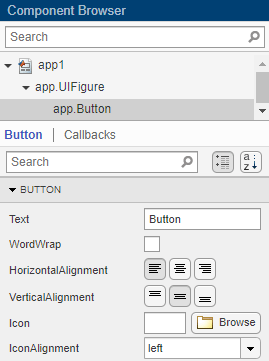
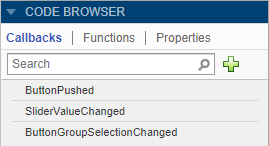
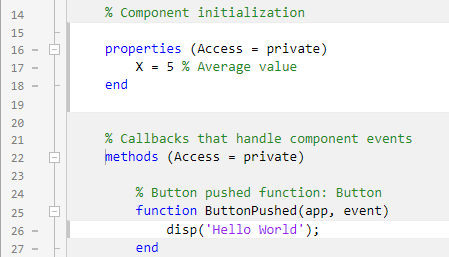
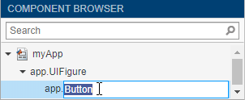
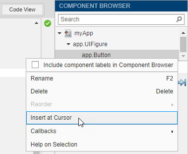
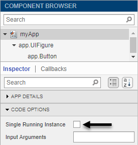
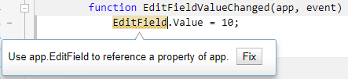
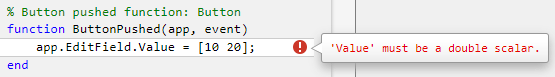

Manage Code in App Designer Code View
Code View provides most of the same programming features that the MATLAB® Editor provides. It also provides a rich set of features that help you to navigate your code and avoid many tedious tasks. For example, you can search for a callback by typing part of its name in a search bar. Clicking a search result scrolls the editor to the definition of that callback. And if you change the name of a callback, App Designer automatically updates all references to it in your code.
Manage Components, Functions, and Properties
Code View has three panes to help you manage different aspects of your code. This table describes each of them.
| Pane Name | Pane Appearance | Pane Features |
|---|---|---|
| Component Browser |
 |
|
| Code Browser |

|
|
| App Layout |
|
|

Identify Editable Sections of Code
In the Code View editor, some sections of code are editable and some are not. Uneditable sections are generated and managed by App Designer, whereas editable sections correspond to:
The body of functions you define (e.g., callbacks and helper functions)
Custom property definitions
In the default color scheme, uneditable sections of code are gray and editable sections of code are white.

Program Your App
App Designer defines your app as a MATLAB class. You do not need to understand classes or object-oriented
programming to create an app because App Designer manages those aspects of the code.
However, programming in App Designer requires a different workflow than working
strictly with functions. You can review a summary of this workflow at any time by
clicking the Show Tips
 button in the Resources tab
of the toolstrip.
button in the Resources tab
of the toolstrip.
Manage UI Components
When you add a UI component to your app, App Designer assigns a default name
to the component. Use that name (including the app prefix) to
refer to the component in your code. You can change the name of a component by
double-clicking the name in the Component Browser and
typing a new name. App Designer automatically updates all references to that
component when you change its name.

To use the name of a component in your code, you can save some time by copying the name from the Component Browser. Place your cursor in an editable area of the code where you want to add the component name. Then, from the Component Browser, right-click the component name and select Insert at Cursor. Alternatively, you can drag the component name from the list into your code.

To delete a component, select its name in the Component Browser and press the Delete key.
Manage Callbacks
To make a component respond to user interactions, add a callback. Right-click the component in the Component Browser and select Callbacks > Add (callback property) callback.
If you delete a component from your app, App Designer deletes the associated callback only if the callback has not been edited and is not shared with other components.
To delete a callback manually, select the callback name in the Callbacks tab of the Code Browser and press the Delete key.
For more information about callbacks, see Callbacks in App Designer.
Share Data Within Your App
To store data, and share it among different callbacks, create a property. For example, if want your app to read a data file and allow different callbacks in your app to access that data, store the data in a property when you load the file.
To create a property, expand the Property
 drop-down in the Editor
tab, and select Private Property or
Public Property. App Designer creates a template
property definition and places your cursor next to that definition. Change the
name of the property as
desired.
drop-down in the Editor
tab, and select Private Property or
Public Property. App Designer creates a template
property definition and places your cursor next to that definition. Change the
name of the property as
desired.
properties (Access = public) X % Average cost end
To reference the property in your code, use the syntax
app.. For
example, PropertyNameapp.X references the property named
X.
For more information about creating and using properties, see Share Data Within App Designer Apps.
Single-Source Code that Runs in Multiple Places
If you want to execute a block of code in multiple parts of your app, create a helper function. For example, you might create a helper function to update a plot after the user changes a number in an edit field or selects an item in a drop-down list. Creating a helper function allows you to single-source the common commands and avoid having to maintain redundant sets of code.
To add a helper function, expand the Function drop-down in the Editor tab, and select Private Function or Public Function. App Designer creates a template function and places your cursor in the body of that function.
To delete a helper function, select the function name in the Functions tab of the Code Browser and press the Delete key.
For more information about writing helper functions, see Reuse Code in Apps Using Helper Functions.
Create Input Arguments
To add input arguments to your app, click App Input Arguments in the Editor tab. Input arguments are commonly used for creating apps that have multiple windows. For more information, see Startup Tasks and Input Arguments in App Designer.
Add Help Text for Your App
Add an app summary and description to provide information about your app to users. To add help text or to edit existing help text, click App Help Text . Use the App Help Text dialog box to specify a short summary of the app and a more detailed explanation of what the app does and how to use it. App Designer adds this help text as a comment under the app definition statement.
To display app help text in the MATLAB Command Window, call the help function and
specify the app name. In addition, app help text appears at the top of the
documentation page for your app. You can view the documentation page for your
app by calling the doc function and specifying the app
name.
Limit Your App to Only One Running Instance at a Time
When you create an app in App Designer you have the option to select between two run behaviors for the app:
Allow only a single running instance of the app at a time.
Allow multiple instances of the app to run at the same time. This is the default behavior.
To change the run behavior of your app, select the app node from the Component Browser. Then, from the Code Options section of the App tab, select or clear Single Running Instance.

When Single Running Instance is selected and you run the app multiple times, MATLAB reuses the existing instance and brings it to the front rather than creating a new one. When this option is cleared, MATLAB creates a new app instance each time you run it and continues to run the existing instances. These run behaviors apply to apps that you run from the Apps tab on the MATLAB Toolstrip or from the Command Window.
When you run apps from App Designer their behavior doesn't change whether this option is selected or cleared. App Designer always closes the existing app instance before creating a new one.
Fix Code Problems and Run-Time Errors
Like the MATLAB Editor, the Code View editor provides Code Analyzer messages to help you discover errors in your code.

If you run your app directly from App Designer (by clicking
 Run ), App Designer highlights the source of errors in your
code, should any errors occur at run time. To hide the error message, click the
error indicator (the red circle). To make the error indicator disappear, fix your
code and save your changes.
Run ), App Designer highlights the source of errors in your
code, should any errors occur at run time. To hide the error message, click the
error indicator (the red circle). To make the error indicator disappear, fix your
code and save your changes.

You can also diagnose problems in your code by debugging your app code interactively in App Designer. For more information, see Debug MATLAB Code Files.
Personalize Code View Appearance
You can customize how your code appears in the Code View editor. To change your code view settings, go to the Home tab of the MATLAB Desktop. In the Environment section, click Settings.
Change Color Settings
To change the color settings for editable sections of code and to customize syntax highlighting, select MATLAB > Appearance > Colors and adjust the desktop tool colors and the MATLAB syntax highlighting colors. These settings affect both the App Designer Code View editor and the MATLAB Editor. For more information, see Change Desktop Theme and Colors.
To change the background color of uneditable sections of code, select MATLAB > App Designer and adjust the read-only background color.
Change Tab Settings
To specify the size of tabs and indents in the Code View editor, select MATLAB > Editor/Debugger > Indenting. From here, you can specify the size of tabs and indents, as well as details about how tabs behave. These settings affect both the App Designer Code View editor and the MATLAB Editor.